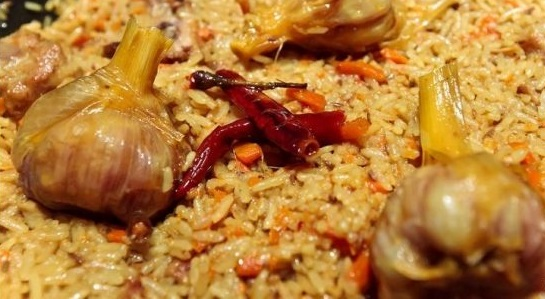
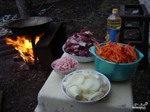
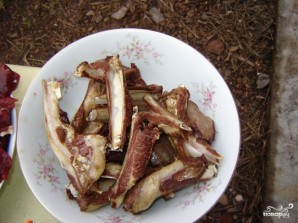
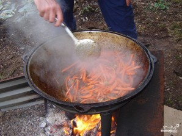
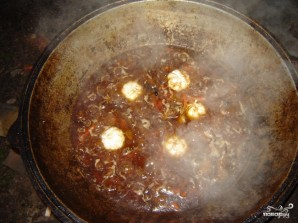
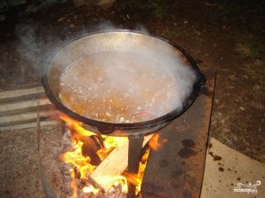
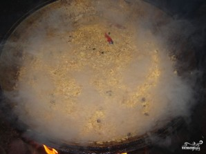
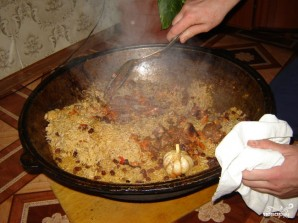

Плов на костре
Как же здорово собраться с друзьями или родными на открытом воздухе и устроить небольшой пикник! А если между делом еще и приготовить вкуснейший плов на костре, тогда вечер точно удастся на славу.
Ну и какой праздник может быть без хорошей и вкусной еды, и здесь в дело вступает отличнейший рецепт приготовления плова на костре, который достался мне от моих родителей. Ингредиенты здесь весьма обычные, как и в домашнем плове, но главное в этом деле - правильно рассчитать пропорции. А дальше, в хорошей компании и с душевной песней, все пойдет как по маслу, оглянуться не успеете, как аромат вашего вкуснейшего плова будет разноситься по всей округе. Этот отличнейший плов станет замечательным поводам для того, чтобы собрать близких вам людей всех вместе и устроить отличный вечер с хорошей компанией. Так что начинайте обзванивать друзей и родственников, а я пока расскажу вам, как приготовить плов на костре, так чтобы все остались довольны и сыты.
Ингредиенты:
- Рис — 1 килограмм (тайландский пропаренный рис)
- Баранина — 1 килограмм (мясо и ребра)
- Морковь — 1 килограмм
- Лук репчатый — 4-5 штук
- Чеснок — 3-4 штук
- Перец стручковый — 2-3 штук
- Масло растительное — 300 грамм (вместо масла можно использовать сало)
- Специи — По вкусу (зира и барбарис)
- Соль — По вкусу
Количество порций: 12-15
Как приготовить:
-
Прежде всего, нам необходимо подготовить продукты. Этим можно заняться, пока огонь будет разгораться. Нарезаем мясо на небольшие кубики со стороной около 3 сантиметров. Морковь режем соломкой, лук кольцами (одну головку надо оставить целую). Рис несколько раз промываем под холодной водой, а затем полностью заливаем водой и добавляем немного соли.
-
 Когда казан хорошенько разогреется на костре, начинаем вытапливать из сала жир или просто наливаем в казан растительное масло. Опускаем в раскаленное масло целую головку лука. Жарим ее, пока она не станет по цвету коричневой, затем вынимаем.
Когда казан хорошенько разогреется на костре, начинаем вытапливать из сала жир или просто наливаем в казан растительное масло. Опускаем в раскаленное масло целую головку лука. Жарим ее, пока она не станет по цвету коричневой, затем вынимаем. -
 Теперь выкладываем в масло ребрышки и обжариваем их в течении 5 минут, помешивая.
Теперь выкладываем в масло ребрышки и обжариваем их в течении 5 минут, помешивая. -
Перекладываем обжаренные ребрышки на тарелку.
-
 Теперь необходимо немного выждать, пока из масла выпарится лишняя влага. Затем выкладываем в казан нарезанный лук и жарим его до золотистого цвета. Добавляем к луку мясо и обжариваем его до румяной корочки.
Теперь необходимо немного выждать, пока из масла выпарится лишняя влага. Затем выкладываем в казан нарезанный лук и жарим его до золотистого цвета. Добавляем к луку мясо и обжариваем его до румяной корочки. -
 Когда мясо начнет становится красноватым, выкладываем в казан нарезанную брусочками морковь.
Когда мясо начнет становится красноватым, выкладываем в казан нарезанную брусочками морковь. -
Несколько минут морковь не следует перемешивать, пока она немного не размякнет от пара. Затем начинаем ее обжаривать, постоянно помешивая. Делаем это в течение 15-20 минут.
-
Теперь добавляем по одной горсти зиры и барбариса, жарим еще буквально минут. Затем вливаем кипяток так, чтобы жидкость накрывала полностью мясо и солим. Выкладываем ребрышки и целые головки чеснока. На слабом огне готовим примерно 40 минут.
-
 По истечении времени разжигаем огонь на полную мощность и выкладываем в казан перец.
По истечении времени разжигаем огонь на полную мощность и выкладываем в казан перец. -
 Теперь выкладываем рис и аккуратно разравниваем его.
Теперь выкладываем рис и аккуратно разравниваем его. -
Осторожно вливаем кипяток при помощи ножа или шумовки так , чтобы жидкость была выше риса на 1,5-2 сантиметра.
-
Делаем слабый огонь и готовим плов под закрытой крышкой примерно 20-25 минут. При необходимости можно добавить немного воды, а в конце приготовления посыпать изюмом.
-
Готовый рис перемешиваем и подаем на стол. Приятного всем аппетита!